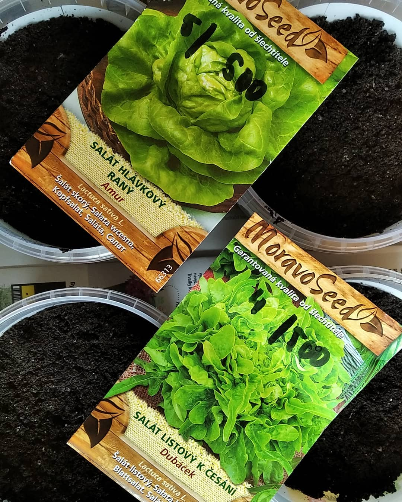

Hlávkový šalát podľa @marianbustik — Normy Jedál
🥬🥗 salát hlávkový ranný - odrůda Amur
🥬🥗 salát listový k česání - odrůda Dubáček
Stačí mi 👉 semena, substrát, kelímky, třeba od potravin.
Substrát 👉 míchám s 💧
Postup 👇
1️⃣ Do dna každého kelímku dělám dírku, aby přebytečná voda mohla vždy odtéct.
2️⃣ Kelímky plním substrátem, který jsem smíchal s 💧. Je to lepší, semena jdou přímo do vlhkého prostředí.
3️⃣ Do každého kelímku vyseji 🤏 pár desítek semen. V sáčku jich je 500, další pak vysévám podle potřeby. 👍 Zahrnu substrátem, vrstvou cca 1cm.
4️⃣ Kelímky dám do sáčků, třeba mikrotenových od pečiva. Kolik se vejde. Sáčky lehce stáhnu. Udělá to dobré klima pro 🌱.
5️⃣ Vše dám na 🌡️☀️ místo. 💦 co dva dny.
6️⃣ Za tři až čtyři týdnů vysadím na pole, ehm záhon.
#marianbustik #newstart2021 #formatnewinstall #vysev #jaro #salat #salát #salathlavkovy #hlavkovysalat #amur #salatlistovy #listovysalat #dubacek #dubáček